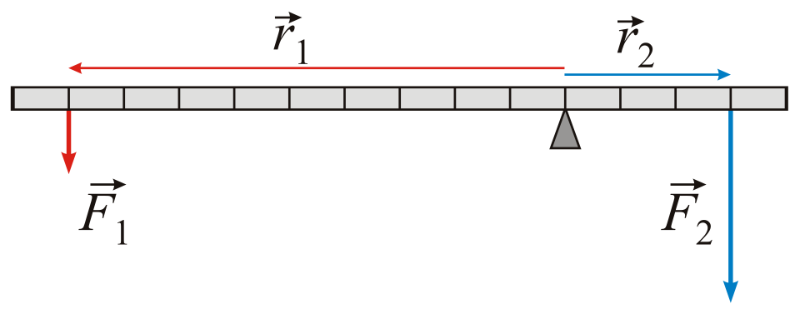

About <<
Previous Next >> w5
w4
牛頓第二運動定律
物體所受到的外力等於動量對時間的一階導數(一次微分值)。當物體在運動中質量不變時，牛頓第二定律也可以用質量與加速度的乘積表示，又稱為「加速度定律」，且用途極為廣泛，它可以用來設計平穩地聳立於雲端的台北101摩天大廈，也可以用來計算從地球發射火箭登陸月球的運動軌道。
當運動中的物體質量不變時，牛頓第二定律可以表述為：物體所受到的外力等於質量與加速度的乘積，而加速度與外力同方向。以方程式表達，F=ma ；其中，F是外力，m 是質量，a 是加速度。
按照第二定律，設定物體的質量不變，則物體的加速度與所受到的外力成正比，設定物體所受到的外力不變，則物體的加速度與質量成反比。另一種定義是基於慣性的概念。在這定義裡，質量被用來量度物體對於改變它的運動狀態的抗拒能力。因此被稱為「慣性質量」。然而，不管這定義是如何真確，它並沒有給出量度質量的方法，人們無法直接估算物體的質量數值，因此，這定義似乎更像是一種形上學定義。回溯在古典力學裡。假設使用一條先前論述的標準彈簧，施加一個標準單位力F0於某物體，則可從測量這物體隨著時間流易而呈現出的速度，估算出這物體的加速度，標記其為a0。繼續做實驗，假設施加兩個標準單位力2F0於這物體，則可從測得這物體的加速度為2a0。
類似地做實驗，施加彈力F於這物體，然後測量這物體的加速度a，可以得到力與加速度彼此之間的關係式：F=ka；其中，k是比例常數。辨識這比例常數為慣性質量，則可察覺這關係式就是牛頓第二定律的方程式。

About <<
Previous Next >> w5